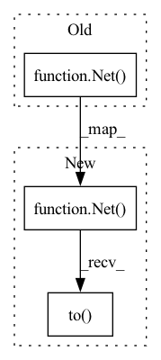

Pattern ID :1779
Before Change
mock_optimizer = mock.Mock(**{"zero_grad.return_value": 1, "step.return_value": 2})
criterion = mock_criterion
optimizer = mock_optimizer
net = Net()
data = torch.Tensor([1])
loss_avg = bp.TBPTT(
net=net,After Change
mock_optimizer = mock.Mock(**{"zero_grad.return_value": 1, "step.return_value": 2})
criterion = mock_criterion
optimizer = mock_optimizer
net = Net().to( device)
data = torch.Tensor([1]).to(device)
loss_avg = bp.TBPTT(
net=net,In pattern: SUPERPATTERN
Frequency: 6
Non-data size: 3
Instances Fragment ID: 8223709
Project Name: jeshraghian/snntorch
Commit Name: 718058bc5a3c85aef5cf10fae09f88a69d063e6f
Time: 2021-06-11
Author: jeshraghian@gmail.com
File Name: tests/test_backprop.py
M Class Name: AnonimousClass
N Class Name: AnonimousClass
M Method Name: test_TBPTT(0)
N Method Name: test_TBPTT(0)
M Parent Class:
N Parent Class:
M File Name: tests/test_backprop.py
N File Name: tests/test_backprop.py
M Start Line: 18
M End Line: 19
N Start Line: 20
N End Line: 21
Before Change
100. * len(test_loader.sampler) / len(test_loader.dataset)
))
model = Net() .to(device)
if is_distributed and use_cuda:
// multi-machine multi-gpu case
logger.debug("Multi-machine multi-gpu: using DistributedDataParallel.")After Change
100. * len(test_loader.sampler) / len(test_loader.dataset)
))
model = Net()
if is_distributed and use_cuda:
// multi-machine multi-gpu case
logger.debug("Multi-machine multi-gpu: using DistributedDataParallel.")
// establish host rank and set device on this node
torch.cuda.set_device(host_rank)
model.cuda(host_rank)
// for multiprocessing distributed, the DDP constructor should always set
// the single device scope. otherwise, DDP will use all available devices.
model = torch.nn.parallel.DistributedDataParallel(model, device_ids=[host_rank], output_device=host_rank)
elif use_cuda:
// single-machine multi-gpu case
logger.debug("Single-machine multi-gpu: using DataParallel().cuda().")
model = model.to( device)
model = torch.nn.DataParallel(model).to(device)
else:
// single-machine or multi-machine cpu case
logger.debug("Single-machine/multi-machine cpu: using DataParallel.") Fragment ID: 8223711
Project Name: aws/deep-learning-containers
Commit Name: e64ed45707041896218a93a201e713f0929592c1
Time: 2020-04-28
Author: 54914459+choidongyeon@users.noreply.github.com
File Name: test/sagemaker_tests/pytorch/training/resources/mnist/mnist.py
M Class Name: AnonimousClass
N Class Name: AnonimousClass
M Method Name: train(1)
N Method Name: train(1)
M Parent Class:
N Parent Class:
M File Name: test/sagemaker_tests/pytorch/training/resources/mnist/mnist.py
N File Name: test/sagemaker_tests/pytorch/training/resources/mnist/mnist.py
M Start Line: 93
M End Line: 125
N Start Line: 88
N End Line: 156
Before Change
x = self.fc3(x)
return x
net = Net()
// Load data (CIFAR-10)
trainloader, testloader = load_data()
After Change
x = self.fc3(x)
return x
net = Net().to( DEVICE)
// Load data (CIFAR-10)
trainloader, testloader = load_data()
Fragment ID: 8223710
Project Name: adap/flower
Commit Name: a85cee17b1a4b84a1757625321e13a0fd37e224b
Time: 2020-12-29
Author: 41542771+Riccardinho22@users.noreply.github.com
File Name: examples/quickstart_pytorch/client.py
M Class Name: AnonimousClass
N Class Name: AnonimousClass
M Method Name: main(0)
N Method Name: main(0)
M Parent Class:
N Parent Class:
M File Name: examples/quickstart_pytorch/client.py
N File Name: examples/quickstart_pytorch/client.py
M Start Line: 38
M End Line: 38
N Start Line: 38
N End Line: 38
Before Change
])),
batch_size=1000, shuffle=True, **kwargs)
model = Net() .to(device)
optimizer = optim.Adadelta(model.parameters(), lr=1.0)
scheduler = StepLR(optimizer, step_size=1, gamma=0.7)After Change
])),
batch_size=1000, shuffle=True, **kwargs)
model = Net()
if torch.cuda.device_count() > 1:
print("Let"s use", torch.cuda.device_count(), "GPUs!")
model = nn.DataParallel(model)
model.to( device)
optimizer = optim.Adadelta(model.parameters(), lr=1.0)
scheduler = StepLR(optimizer, step_size=1, gamma=0.7) Fragment ID: 8223707
Project Name: mlf-core/machine_learning_determinism_evaluation
Commit Name: e0a84febc720df5ce2ce78e79b353e2e0bbe9112
Time: 2020-04-01
Author: lukas.heumos@posteo.net
File Name: bin/train_mnist_pytorch.py
M Class Name: AnonimousClass
N Class Name: AnonimousClass
M Method Name: start_training(4)
N Method Name: start_training(4)
M Parent Class:
N Parent Class:
M File Name: bin/train_mnist_pytorch.py
N File Name: bin/train_mnist_pytorch.py
M Start Line: 94
M End Line: 111
N Start Line: 98
N End Line: 132
Before Change
print("Centralized PyTorch training")
print("Load data")
trainloader, testloader = load_data()
net = Net()
print("Start training")
train(net=net, trainloader=trainloader, epochs=2, device=DEVICE)
print("Evaluate model")
loss, accuracy = test(net=net, testloader=testloader, device=DEVICE)After Change
print("Centralized PyTorch training")
print("Load data")
trainloader, testloader = load_data()
net = Net().to( DEVICE)
net.eval()
print("Start training")
train(net=net, trainloader=trainloader, epochs=2, device=DEVICE)
print("Evaluate model") Fragment ID: 8223706
Project Name: adap/flower
Commit Name: 937a691350e027f67873c16dca3395745e4dbe6b
Time: 2021-05-07
Author: daniel@adap.com
File Name: examples/pytorch_from_centralized_to_federated/cifar.py
M Class Name: AnonimousClass
N Class Name: AnonimousClass
M Method Name: main(0)
N Method Name: main(0)
M Parent Class:
N Parent Class:
M File Name: examples/pytorch_from_centralized_to_federated/cifar.py
N File Name: examples/pytorch_from_centralized_to_federated/cifar.py
M Start Line: 129
M End Line: 129
N Start Line: 132
N End Line: 137
Before Change
layer_sizes = [x_dim] + n_hiddens + [1]
print("layer size: ", layer_sizes)
net = Net( layer_sizes, lb_samples)
print("parameters length: ", len([_ for _ in net.parameters()]))
lr = 1e-3
model = SGLD(lr)After Change
layer_sizes = [x_dim] + n_hiddens + [1]
print("layer size: ", layer_sizes)
net = Net(layer_sizes, lb_samples).to( device)
print("parameters length: ", len([_ for _ in net.parameters()]))
lr = 1e-3
model = SGLD(lr).to(device) Fragment ID: 8223714
Project Name: thuwzy/zhusuan-pytorch
Commit Name: 0345dcbe7f305f7d4c81b7e4ab5408172acc9ea2
Time: 2021-08-18
Author: wang-zy21@mails.tsinghua.edu.cn
File Name: examples/bayesian_neural_nets/bnn_sgmcmc.py
M Class Name: AnonimousClass
N Class Name: AnonimousClass
M Method Name: main(0)
N Method Name: main(0)
M Parent Class:
N Parent Class:
M File Name: examples/bayesian_neural_nets/bnn_sgmcmc.py
N File Name: examples/bayesian_neural_nets/bnn_sgmcmc.py
M Start Line: 90
M End Line: 141
N Start Line: 79
N End Line: 148